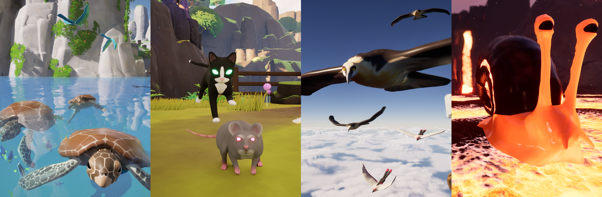
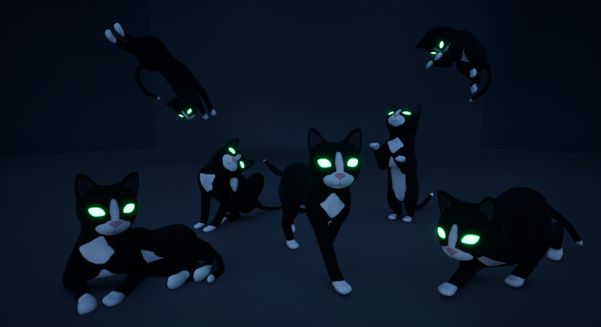
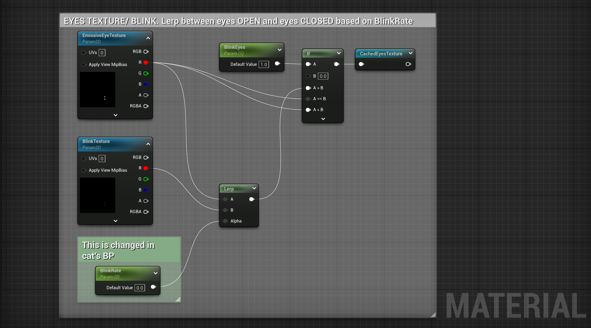
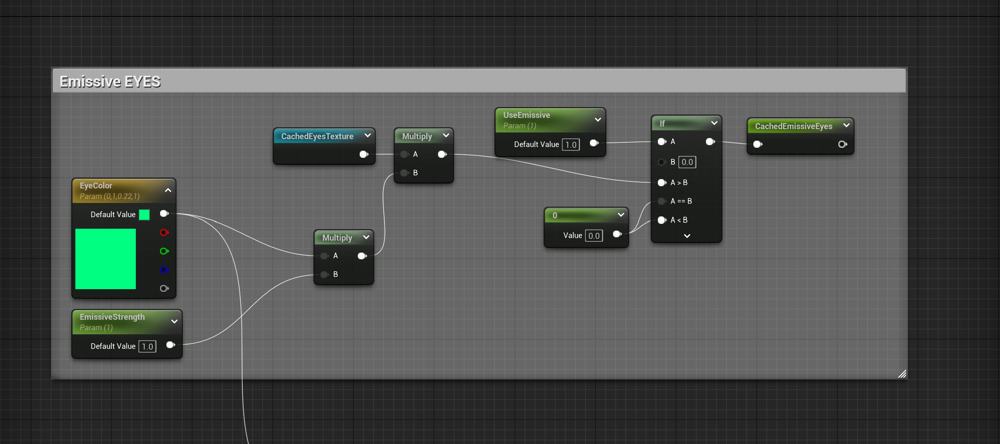
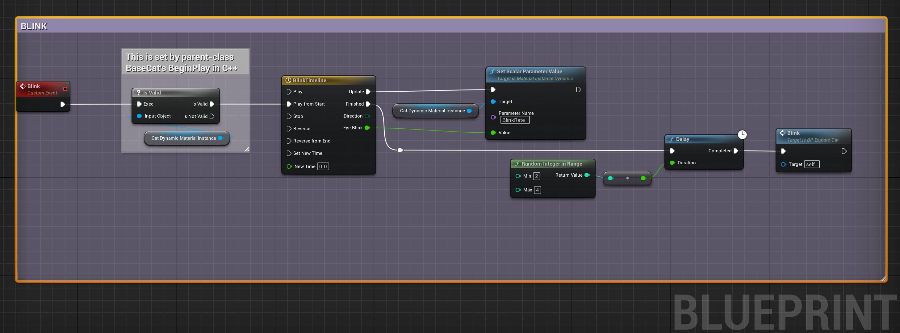

Zappy Cats: Character Models

Blender, Procreate, UE5 Material Graph
Design Goals...
Zappy Cats is a silly game and the playable character is a cat, so naturally the enemy character had to be a rat. To make the levels feel more alive I added animals that made sense for their environment. I was inspired by the series of sky levels in the game "Frogger: He's Back!", where part of the level involves riding around on birds. The Sky Ruins level was the first to get a rideable animal, but I soon made one for the other levels as well. It was both a challenging gameplay mechanic and a way to liven up the world.
Characters...
- The playable character is a Cat with 17 different coat variations for Players to chose from
- The main enemy is a Rat, which spawns with either a white, brown, grey, or black coat
- The Snail is a rideable character in the Lava Caves level
- The Sea Turtle is a rideable character in the Pirate Cove level
- The Vulture is a rideable character in the Sky Ruins level, inspired by bearded vultures!
- There are two color variations for the Bird. Tropical variation is rideable in Pirate Cove, and the Red variation is used decoratively in the Sky Ruins level


Various animations of the cat model. The eye color can be chosen by the player and determines the color of the VFX spawned by the cat!


Various animations of the rat model. The glowing eyes makes them easier to spot in darker areas.


(L) Lava Snail, I made the shell with Blender Geometry Nodes (R) Hand painted Sea Turtle


(L) Bearded Vulture. Hand painted. Legs omitted intentionally. (R) Perhaps a bit more creepy than cute...


(L) Tropical Bird (R) Red variation
Approach...
I had some decent practice in Blender before starting work for this game, but I'm by no means an expert. Early on I decided the visual style of this game would be 'mid-poly' and stylized, rather than going for realism. I picked a style I knew I could acheive, and it was just a bonus that it suited the game's silly nature!
I did all of the sculpting, retopologizing, texturing, and animating in Blender. For the Cat and Rat I was able to use Meta rigs to quickly get them set up for animation. For the other animals I placed the bones by hand and didn't bother with a rig since I knew they only needed a few simple animations.
I put more work into the cat since it's seen the most. It's used for the playable character but also all of the NPCs, so it had to look cute! It also has the most animations since it had to have all movements, interactions, idling, and NPC actions. For these I tried to find as many reference photos and videos of cats moving as I could, and supplemented by watching my own cat, Franklin.
For the Rat, it had to be able to move around, attack, and react to damage. I used a few reference photos for its running cycle and used my best guess for the rest of it. The other animals only needed basic movement and an idle animation.
For all of the animations I tried to follow the basic principles of animation, especially anticipation and follow through. That said, I quickly learned that animating for film is different then animating for games. The best example I can give for this is when I was animating the cat jumping. At first I didn't realize that it needed to be done in stages rather than one full animation. The Player presses space to jump and the cat jumps into the air. Then, because this is a game with gravity, the cat falls for however long it takes to land. This can be any length of time, so the initial jump up, falling, and landing animations needed to be made seperately.
I ended up redoing the jump animations several times until they felt right as a sequence in the game, even if it wasn't the most realistic. But this let me add a double jump and a backflip without having to redo the entire ground-to-air sequence. I also made sure the jump up animation blended well with the run animation, since this was the most common sequence in gameplay.
Customization...
For the Playable Character I wanted to give the player options for coat color, eye color, and name. This meant I had to paint a bunch of different coat colors! I knew players might want to pick a coat that resembeled their own pets, so I had to make sure I gave as many options as I could manage in the time frame. I also wanted to encourage players to explore, so I hid unlockable coat colors around the levels.

The Cat Creator Menu appears when Players first start a new game. They can return to the Menu to change their cat at any time. I won't go into the implementation details here, but if you're curious about it I'd be happy to chat.
I used Blender to paint the cat's face and the basic markings for the black and white tuxedo cat. Once I had all the features mapped out I brought the texture into Procreate and painted all the variations.


(L) Standard variations of cat coat including three solid colors, three dual colors, three tabby colors, plus a calico, siamese, and tortoiseshell. (R) Special cat coats only unlockable by finding them in the levels. Includes a rainbow tabby, red and white abstract tabby, stars and moons, pink hearts, and snow leopard variations.
Refinement...
Getting the cat's eyes to blink was a bit of a challenge since I didn't actually sculpt any facial features onto the character model. It doesn't have "eyes" to blink! Everything is painted on the base texture so I had to use a combination of the cat's Material and the playable Cat's blueprint to create the illusion of blinking.
I had already made a texture with just the eyes to use for the emissive output in the cat's material, so I painted another with just the eyes closed. Next I added a linear interpolation node in the Material graph to blend between the two textures. I set up a variable to control the blend amount called "BlinkRate".


Exerpts from the Cat's Material graph. (L) The blend betweeen open and closed eye textures is cached to use in later calculations. NOTE, to improve performance the NPC's only Blink while the Player is talking to them, hence the IF check here to turn Blinking on/off. (R) Emissive eye color is determined by Player and used here with the cached result of eye texture blend.
Next, in the Cat's C++ file, I created a dynamic material instance and made it accessible in Blueprints. This is used to apply the User's saved preferences for coat and eye color. I handled that with the following function, which is called at the begining of gameplay.
void ABaseCat::SetCosmeticsToSavedValues()
{
// Set cat coat and eye color to saved values
if (ISaveGameInterface* SaveGameInterface = Cast<ISaveGameInterface>(GetGameInstance()))
{
FCatProps CatProps = SaveGameInterface->GetCatProps();
UMaterialInterface* ParentMaterial = GetMesh()->GetMaterial(0);
CatDynamicMaterialInstance = UMaterialInstanceDynamic::Create(ParentMaterial, this);
GetMesh()->SetMaterial(0, CatDynamicMaterialInstance);
CatDynamicMaterialInstance->SetVectorParameterValue(TEXT("EyeColor"), CatProps.LaserColor);
CatDynamicMaterialInstance->SetScalarParameterValue(TEXT("BlinkEyes"), 1.f);
LaserColor = CatProps.LaserColor;
if (!CatProps.CoatTexture) return;
CatDynamicMaterialInstance->SetTextureParameterValue(TEXT("FurTexture"), CatProps.CoatTexture);
}
}
The Cat's Blueprint uses the function Blink() to set the "BlinkRate" parameter on the dynamic material instance.

Here we've set the BlinkRate to the dynamic value "EyeBlink" output by the timeline. When the blink is completed, it selects a random time to wait before blinking again.
Retrospective...
It was a lot of fun making all the characters and assets for this game! Of course I can always do better, and these models certainly have a lot of room for improvement. But I managed to keep the poly count relatively low for each one, and their animations while not always perfectly accurate are still believable.
There's a lot more I could've done with these characters, like making some NPCs you can actually talk to or making more enemy types like snakes or spiders! But I wanted to actually finish the game, and that meant sacrificing some creativity. Where the models lack in realism or refinement, they make up for by livening the worlds and providing interesting traversal mechanics. Just like I set out to do!